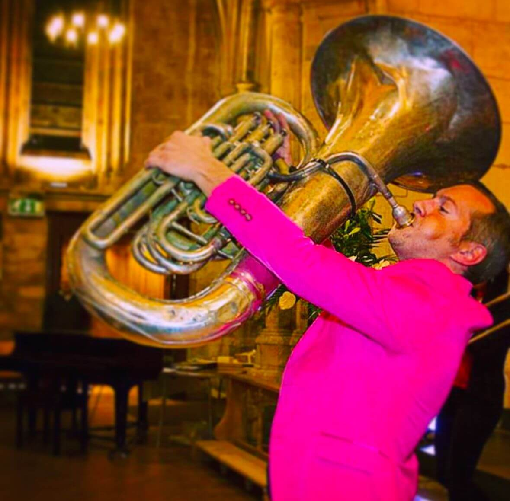

A life lived loudly, generously and full of music.
Nathan Gash began his musical journey aged 7 at Reading Central Salvation Army. He quickly showed an aptitude for music, learning brass instruments (the tuba and trombone) and the piano. Nathan studied music at King's College London before going on to a Post Graduate Diploma at the Royal College of Music. After leaving college, he made a living playing and teaching music.
As well as being an exceptional performer, Nathan had a real enthusiasm for music education. With his brass group, Oompah Brass, he embarked on many projects with schools in less favoured areas, to deliver fun, inclusive and inspiring music sessions to children and young people who would otherwise not have access to these opportunities.
He wanted all children to enjoy a quality music education, and he transformed many students' approach to music, making it fun and engaging.
Nathan passed away suddenly on 27 December 2024, aged 43, and is sadly missed by all whom he influenced over his two decades of instrumental teaching.
"It is our hope that we can continue Nathan's legacy by setting up a foundation in his memory."Simon Gash - Nathan's Brother
